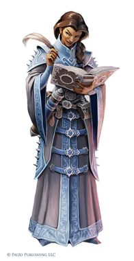
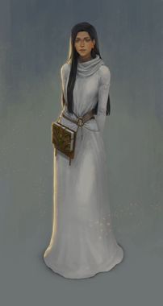
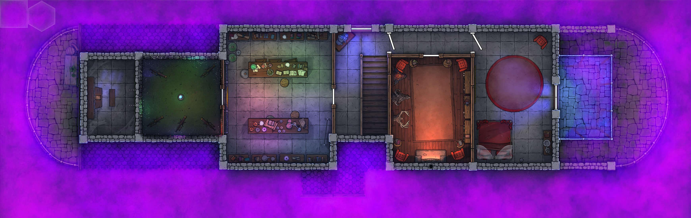
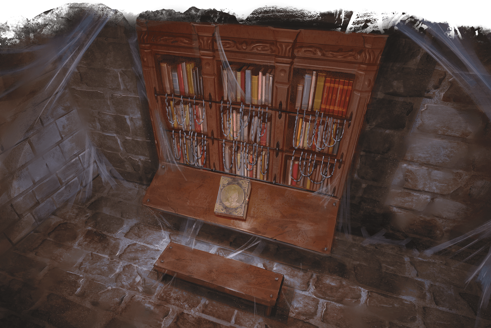

Subject The Mystery Thickens
From Dilyn Corner <dilyn.corner@tutanota.com>
Date Thu, 03 Mar 2022 21:00:00 -0500
On the other side of the door, our brave heroes discover... An empty room?
It resembles a kitchen, with a long table in the middle and cookware, pots,
pans, and tools on the walls and tables inside. At the back of the room is a
door, presumably leading to a storage area. But the bodies of the voices which
were heard not just a moment ago are nowhere to be seen!
After some coaxing by the more brave amongst us, a woman's voice can be heard on
the other side of the room. A view minutes of discussion passes and the party
convinces this voice that they mean them no harm and only want to help. A woman
in a flowing blue robe - similar to the ones seen on a few folx in Candlekeep -
is before the party, dropping her invisibility.

Next to her is a young girl in a grey robe, also similar to the ones many folx
within Candlekeep were seen wearing. It seems as though both of these people are
Avowed from Candlekeep.

A brief interrogation occurs. The young girl (Laura) had heard tales of
Fistandia, and wanted to see her study. The blue-robed woman promised to show
her one better; Fistandia's Mansion itself! Upon arrival, however, they
discovered that things were not quite as they should be. Phantasmal horrors and
illusions haunted these once peaceful halls. Terrified, Laura ran into the
kitchen. The older woman attempted to comfort her for quite a while, keeping
them as safe as she could in this room.
Upon seeing the fright on Laura's face, Rhaena tries to comfort her. She offers
up her holy symbol to Selune as a show of good will, that they are in fact not
illusions or here to harm them, but instead to try and help as best they can.
Laura seems slightly more at ease with this news, but still clings close to her
older companion, not quite trusting all of these new people in this scary place.
The group learns two important things:
1) Fistandia's mansion is not normally like this, though the upstairs floor
seems entirely unaffected by whatever illusionary magic is doing this
2) The only way out involves some sort of secret passphrase. This passphrase
has... something to do with books...?
With this limited but useful bit of information, our adventurers add have some
new objectives:
1) Find Ripper
1.a) Kill Ripper?
2) Eliminate this evil... Thing...
1.b) Find the evil thing
3) How get out???
And they set off down the hell, approximately 40 feet away from where they
currently stand. And are greeted by two skeletons sitting in some high back
chairs on the opposite side of the room. The room also contains several
tapestries, and seems to be a sort of dining room with a large wooden table
spanning most of the length of the room.
The heros make their way, slowly and cautiously, around the table to dispatch
these skeletons, which they do so quite swiftly. On a hunch that something may
have happened in the kitchen, Saccharine attempts to move back towards the
kitchen to see if the two women are still there. On his way unfortunately, he is
bitten by... a chair?
The party is goes completely apopleptic. Not only are inanimate skeletons
attempting to kill them (this is at least expected), and not only are BOOKS
coming to life to attack them (odd, but not unheard of), not even CHAIRS are
safe? Insanity.
And thus begineth the great Chair Murder.
With all the chairs fully dead (only one chair was actually dangerous), the
party moves on.
They bravely venture outside of the mansion onto the patio!
They inquisitively drop torches over the edge of the patio to see where they
fall!
(they... don't...?)
They solemnly consider having Ris fly into the mist!
He does!
He gets very tired very quickly!
It is decided that this is probably a bad move.
Rhaena collects the two orbs floating in the air in the balcony. They are
driftglobes! They provided some possibly useful daylight to the trees growing on
this patio, wrapping themselves like ivy across some thatched bracing on the
walls and ceiling. They'll probably be fine without the light!
Satisfied with their investigation of the quiet arboretum, they go back inside
and travel upstairs!

As the group heads upstairs, a few notice something conspicuous: there is a
black shadow clinging to the stairs, slowly fading as they ascend upwards. It
confirms things that they heard from the woman downstairs and some of their own
experiences: there is some sort of hallucinatory terrain or illusion magic at
play in this mansion, and it seems to be coming from downstairs.
At the top of the stairs, a suit of armor stands beneath what appears to be a
door in the ceiling leading to some sort of attic space. They make their way up,
and notice on the far western side of the attic space some light filtering in
through the floorboards. The party heads over and investigates, finding a dimly
light stone floor room with a single bench, an angled drafting desk, and a large
bookshelf. They break through the floor, eager to see what *this* room could
have in store for them...
They find a book on the drafting desk, with a gilded letter K on the spine. Upon
inspecting the bookshelf, they find that the books are all chained to the
bookshelf. It appears as though any attempt to unshackle the books from their
prison would result in their destruction. While investigating some of the tomes
on its shelves, the bookshelf attacks!

The party quickly dispatches the shelf (with perhaps a dangerous amount of
flame), and discovers that the books include a lot of... complicated and
interesting tomes. Some are in languages nobody recognizes, others appear to be
about various spells and magicks. Some are more like stories; Stories of
Elysium, for instance. Others are more instructable; Travelling the Upper
Planes. Upon spying this books written in Celestial, Rhaena becomes set on
taking these books. Considering their prison, she decides on the only reasonable
course of action: we must take the bookshelf with us. She asks Ris if he has any
way of storing it in his lamp, and Ris sets to work making room within his lamp.
The bookshelf is so large it takes up an immense section of the interior, but it
can certainly fit. Rhaena breaks the bolts keeping this bookshelf in place, and
Ris makes room for their new addition to the library.
---
Subject A Small Exposition
From Dilyn Corner <dilyn.corner@tutanota.com>
Date Fri, 11 Mar 2022 21:00:00 -0500
The party continues on after their short rest in the room where the bookshelf
previously known as stuck in this house was. They make their way out of a fairly
obvious door (the only one in the room aside from the makeshift "door" they
placed in the ceiling) and find themselves in a room completely pitch black save
for three things:
* Five telescopes placed in various parts of the room
* A large crystal ball in the middle of the room
* Stars seeming to make constellations across the walls and ceiling
It looks like some sort of astronomy tower.
The telescopes and crystal ball seem tightly affixed to their spots, though the
telescopes do make investigating the various constellations around the room a
bit easier. Upon closer inspection, it seems that this room is not in fact
completely open to the sky above - instead, it would appear to just be some sort
of illusion on the room itself. It does in fact have four walls, a ceiling, and
a floor. And on the wall opposite where they made their entrance is a door!
Behind them, however, they can no longer discern the door they came through.
Curious.
Bored with this room, the troupe carries on into the next room.
Within the next room are two long tables with all sorts of scientific equipment
and notebooks scattered across them. On either wall orthogonal to the door are
floor to ceiling glass-doored cupboards full of different objects and items
identifiable only as some collection of esoteric experiments - bones, animals,
plants, jars, etc. On the middle of one of the tables is a book with the gilded
letter S on the spine.
Bored of science, the party continues and makes their way down the hallway,
where they enter quite a cozy room!
On one wall are mounted the heads of three different animals - Bryn identifies
them as a stag, a hellhound, and a black dragon wyrmling. On the opposite wall
are, as is tradition here, floor to ceiling bookshelves filled with books. On
the opposite wall is a large hearth with a roaring fire, and above the mantle
two swords!
The party go to investigate the fire and find that it, like so many things in
this house, are merely illusions. Disappointed, they investigate the stuffed
heads. Of course, these are just fake stuffed heads - who would have real heads
in this room? Hah. Continuing on, they inspect the swords. As luck would have
it... Just kidding, these are just really artistic looking swords, but poorly
made for anything other than display. Of course, as with most things, these are
living swords. They attack the party.
It doesn't last long of course (we're talking about heroes here after all!) and
on their way out of this overly disappointing room, the party spies a book with
a gilded letter A on the spine.
Carrying on, the players make their way into a bedroom. It's very boring -- the
chair isn't evil, the bed doesn't attack, the armoir doesn't spring to life or
contain any secrets, there's not even a sandman under the bed. Displeased with
the overall boring nature of the second floor of this mansion, the party makes
their way back downstairs to meet up with the women they met downstairs, hoping
to get some more answers.
Perhaps surprisingly, the party finds the older woman and Laura precisely where
they left them, huddled together in the back of the kitchen!
The party begins asking some questions, mainly whether the few books they've
collected which stuck out from the rest are the ones they might need to escape
this hellish place. The older woman takes the books to inspect them, and reveals
that they are missing a book - the letters on the spines are supposed to spell
Karsus (they are missing the book with a U).
The books themselves are just stories and explanations of various things -- a
powerful mage doing incredible feats, the laws and regulations of a land and the
minutae that accompany such things, histories and lineages, stories of spells
that don't exist or make any sense, and so on.
When pressed for more information on Karsus and these books, the woman declares
that Karsus is not something worth knowing or remembering, and these books
aren't important; much of their details should be forgotten. She doesn't even
know why Fistandia would keep these books! But the passphrase KARSUS can
probably get them out of this mansion...
Of course, the heroes haven't done as she begged them to: to rid the house of
this mysterious curse which has befallen it. The strange hallucinatory terrain
(shadowy, dark tendrily terrain?) which licks the top of the stairs still
lingers, even after defeating (seemingly) every monster in this mansion.
Something else must be lurking about.
Not to mention they still haven't found Ripper...
________________________________________________________________________________
Dilyn Corner (C) 2020-2022